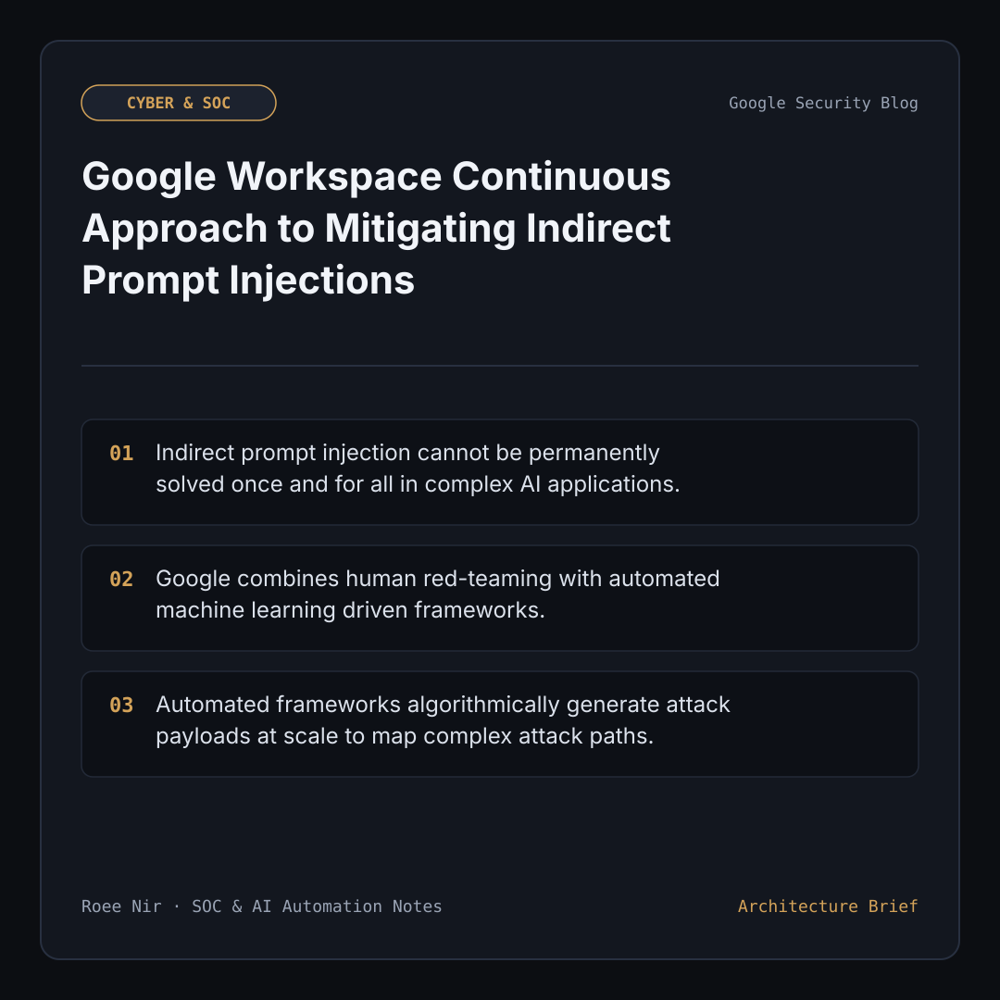

MANUAL PUBLISH PACK · Never auto-posted to LinkedIn without your click.
1. Visual Card (1080x1080)

2. פוסט מוכן + תגובה ראשונה
יש בעיות אבטחה שאי אפשר לסגור פעם אחת עם עדכון קוד ולהמשיך הלאה. השבוע פרסם אדם גביש מ צוות הגנת ה GenAI של Google פירוט על הגישה המתמשכת שלהם להתמודדות עם הזרקות פרומפט עקיפות ביישומים מורכבים כמו Workspace המשלבים את Gemini. האתגר המרכזי הוא שכאשר מודלי שפה מעובדים יחד עם אוטומציה סוכנית ומקורות מידע מרובים, נוצר מרחב תקיפה דינמי שבו תוקפים יכולים להשפיע על התנהגות המודל מבלי שהמשתמש הקצה יקליד דבר. כדי להתמודד עם המורכבות הזו, צוותי האבטחה של גוגל משלבים שילוב של שני מנגנונים מרכזיים מתחת למכסה המנוע. מצד אחד, הם מפעילים צוותי אדום אנושיים המדמים פרופילי משתמש ריאליסטיים כדי לחשוף חולשות תפעוליות. מצד שני, הם משתמשים במסגרות אוטומטיות המייצרות פיילודי תקיפה באופן אלגוריתמי כדי לבדוק עשרות תרחישי קצה בקנה מידה רחב. זה לא אומר שחברות אחרות יכולות פשוט להעתיק את המודל ולשכוח מאבטחת שכבות. אבל גישה זו ממחישה שארכיטקטורת הגנה מחייבת מעקב בלתי פוסק אחרי נתונים נכנסים. הסיפור הגדול כאן הוא המעבר מתפיסת הגנה סטטית של סינון מילות מפתח להגנה התנהגותית דינמית שמבינה את הקשר הנתונים של סוכני ה AI. איך אתם בודקים את האפליקציות שלכם מול הזרקות עקיפות כאלה? #CyberSecurity #AIsecurity #PromptInjection #BlueTeam #InfoSec #CloudSecurity
תגובה ראשונה (לשמירה על חשיפה אורגנית):
לקריאת המחקר והפירוט הטכני המלא מתוך Google Security Blog: http://security.googleblog.com/2026/04/google-workspaces-continuous-approach.html